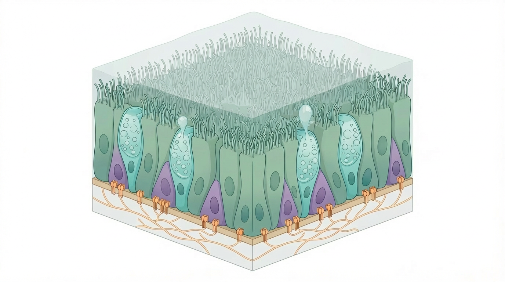

The EpiCENTR group studies how airway epithelial stem cells build, maintain, and repair the respiratory epithelium.
We investigate the cell biology of the airway epithelium, with particular emphasis on stem cell–matrix interactions, tissue maintenance, and repair.
Principal Investigator: Rob Hynds
Email
rob.hynds@ucl.ac.uk
Address
Zayed Centre for Research
20c Guilford Street
London WC1E 1DZ